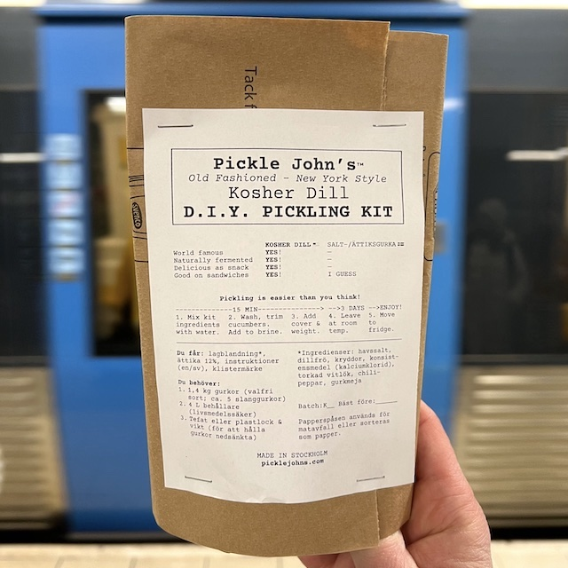

Anyone Can Pickle!
It’s me, Pickle John. If you’re like me and you love a good pickle, then you gotta try my Pickle John’s Kosher Dill D.I.Y. Pickling Kit.
Making pickles might sound fancy and hard, but my kit makes it easy. All you gotta do is add fresh cucumbers and water, and in just a few days, you’ll have authentic New York-style kosher dill pickles. (If you want, you can customize the flavor by adding things like fresh garlic, dill, chili, sugar.)
And folks, there’s nothing like the feeling of making your own pickles. It’s a fun and rewarding experience, something you can share with family and friends. Even kids can be pickle magicians, turning boring cucumbers into something magical.
So order a kit today, and bring the taste of New York to your kitchen. Trust me, you won’t go back to supermarket pickles once you try it!
Ok, Whadaya Need?
Here’s what you get in a Pickle John’s Kosher Dill D.I.Y. Pickling Kit:
- Instructions (English + Swedish)
- Packet of brine mix (all the dry ingredients you need)
- Bottle of distilled/spirit/white vinegar (sv: ättika)
- “Saltgurka? Nej Tack” sticker (limited edition!)
Here’s what you need at home:
- 1.4 kg cucumbers (about 5 slanggurkor)
Any type of cucumber can be pickled. Look for fresh, firm ones. [More about cucumbers below.]
- 4 L food-safe container (plastic or glass)
If you don’t have a single large container, you can try multiple same-sized containers. [More about containers below.]
- Weighted inner cover (to keep cucumbers fully
submerged)
You can use a small plate or cut-up plastic lid + jar. [More about using an inner cover below.]
Let Me Tell You About Cucumbers
Alright I’m about to drop some cucumber knowledge on you. For pickling, you can really use any type of cucumber, but you want to get your hands on the freshest ones possible.
You Don’t Need a Fancy Container
Now, you might be picturing a traditional glass mason jar, but let me tell ya, you can pickle cucumbers in just about anything, from last week’s ice cream container to an old bathtub.
The key to pickling success is to keep your cucumbers submerged in the brine by using some sort of weighted inner cover. Put a small plate or saucer on top of your cucumbers. Or cut up an old plastic lid, then add a small jar or something else on top. It doesn’t have to be fancy, as long as it prevents cucumbers from floating to the surface.
| ### | <- weight if needed (e.g. a jar)
| ======= | <- inner cover (e.g. a saucer or cut-up plastic lid)
|CUCUMBERS|
|CUCUMBERS|
‘---------’
From an old-school wooden barrel to a shiny IKEA 365+ food container, there’s a world of options out there. Try to use what you already have. Be creative!
The Deal About Salt
If you’re checking the ingredients of my D.I.Y. kit, you might be curious about that calcium chloride (sv: kalciumklorid). Well, it’s simple: Calcium chloride is a specialty salt, used in making many common food products — like in cheese, beer, and tofu. It can be naturally found in seawater, and it’s considered safe by food safety regulatory agencies.
We also use sea salt, a.k.a. sodium chloride (sv: natriumklorid), of course, to enhance flavor and draw out excess water. That’s important for achieving that signature pickle crunch. But we don’t want to use too much regular salt. It’s not healthy to consume a ton of sodium, you know.
That’s where the calcium chloride comes in. It helps to maintain the texture of the cucumbers and prevent them from becoming mushy. The result: crispy pickles that stay crispy — all while using less regular salt.